Place symmetric diameter dimensions
-
Verify that the Sketching tab (or Home tab)→Relate group→Maintain Relationships command
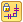
is selected before you place symmetric diameter dimensions. -
Choose the Symmetric Diameter command
 .
. -
On the Dimension command bar, do the following:
-
From the Orientation list, select a dimension orientation option. The default is Horizontal/Vertical.
For orientation examples, see Symmetric Diameter command.
-
Specify whether you want to place half or full diameter dimensions using the Diameter-Half/Full button.
Diameter-Half/Full
On
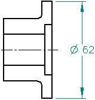
Off
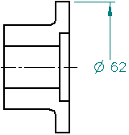
-
-
Do any of the following:
- Place dimensions perpendicular or parallel to a central linear axis:
-
-
(Specify the dimension origin element) Click a linear geometric element, such as a centerline annotation or a construction line that is attached to the part (1).
The center axis is displayed and highlighted.
-
(Specify the dimension measurement element) Click the first element or keypoint that you want to dimension (2).
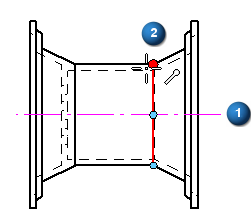
-
Move the cursor to position the dimension where you want it, and then click to place the first dimension (3). If you need to change the orientation of the dimension by 90 degrees, hold the Alt key as you position the dimension.
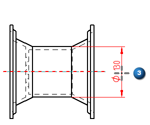
-
Click the next element or keypoint to dimension (4).
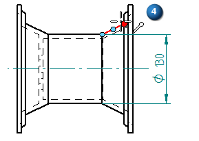
Note:The second dimension is placed automatically, aligned and grouped with the first dimension.
-
Continue clicking elements or keypoints to place the remaining dimensions.
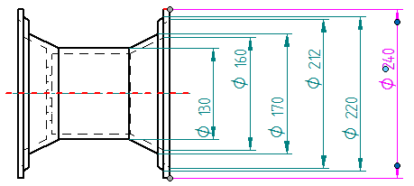
-
- Place a new group of dimensions using the By 2 Points orientation:
-
-
(Specify the dimension origin element) Click the first of two keypoints to define an implied axis (1).
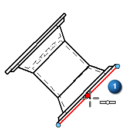
-
(Specify the dimension measurement element) Click a second keypoint to finish specifying the implied axis and to identify the first point to dimension (2).
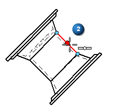
-
The first symmetric dimension and the implied center axis are displayed in dynamic mode. To change the axis orientation by 90 degrees, hold the Alt key as you move the cursor (3).
Click to place the first dimension.
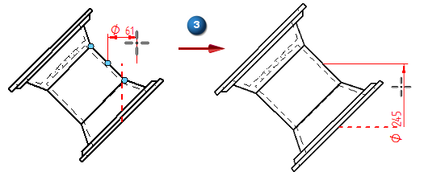
-
Click the next keypoint to dimension.
The second dimension is placed automatically, aligned with the first.
-
Continue clicking keypoints to place the remaining dimensions.
All dimensions after the first dimension are placed automatically when you click a keypoint or geometric element.
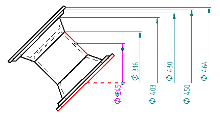
-
- Add symmetric diameter dimensions to a dimension group:
-
-
(Specify the dimension origin element) Locate and click an existing symmetric diameter dimension in the group.
-
(Specify the dimension measurement element) Click the element or keypoint to dimension.
The dimension is placed automatically, aligned with the other dimensions in the group. Existing dimensions are rearranged so that the dimensions maintain the correct order.
-
-
You can locate intersection points for placing symmetric diameter dimensions.
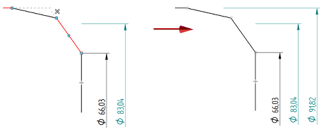
-
To use a different origin or alignment for additional dimensions, right-click to start over when you are prompted, Click on the dimension origin element.
-
After the center axis is defined in one view, you can click to place symmetric diameter dimensions on a different view of the same geometry, such as a detail view.